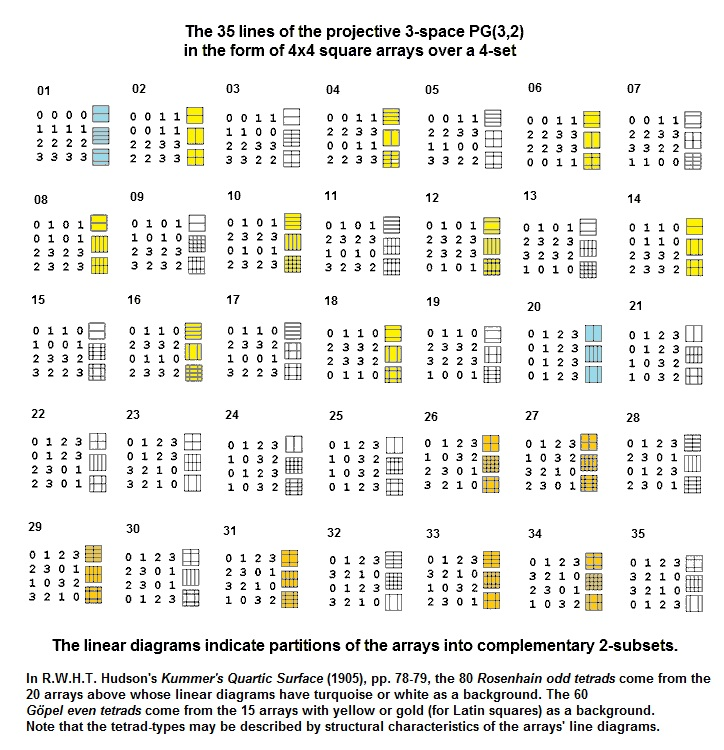

| Finite
Geometry Notes
|
Rosenhain and Göpel Tetrads in PG(3,2)
by Steven H. Cullinane on March 17, 2013
Hudson's 1905 classic Kummer's Quartic Surface
discusses the 80 Rosenhain odd tetrads and the 60 Göpel even tetrads.
These 140 tetrads occur naturally in the Galois projective 3-space PG(3,2).
The Rosenhain and Göpel tetrads occur naturally
in the diamond theorem model of the 35 lines of PG(3,2):
As in the proof of the diamond theorem, each 4x4 array above has a set of three line diagrams. Arrays containing the Rosenhain odd tetrads (turquoise or white) have either 3 or 1 unidirectional line diagrams (all-horizontal or all-vertical lines). Arrays containing the Göpel even tetrads (yellow or gold) have either 2 or 0 unidirectional line diagrams.
The Göpel tetrads appear in my "Inscapes" notes and in "Picturing the Smallest Projective 3-Space" (April 1986). See Inscapes and Notes on Groups and Geometry, 1978-1986.
More recently, they have appeared in "Birational Automorphisms of Quartic Hessian Surfaces," by Igor Dolgachev and JongHae Keum, in Transactions of the American Mathematical Society, Volume 354, Number 8, pages 3031-3057 (published online on April 3, 2002).
Dolgachev and Keum represent the Göpel tetrads as occuring in a set of 16 points that they identify with the empty set plus the fifteen 2-element subsets of a 6-set (p. 3037). For an earlier version of this representation, see "The 2-subsets of a 6-set are the points of a PG(3,2)" (May 1986). That note also presents the Göpel tetrads as they relate to the Miracle Octad Generator of R. T. Curtis and to its underlying Moore correspondence.
Update: August 3, 2014 —
Update: August 6-7 and 15, 2014 —
From
Gotay and Isenberg, “The Symplectization of
Science,”
Gazette des Mathématiciens 54,
59-79 (1992):
“…
what is the origin of the unusual name ‘symplectic’? ….
Its mathematical usage is due to Hermann Weyl who,
in an effort to avoid a certain semantic confusion, renamed
the then obscure ‘line complex group’ the ‘symplectic group.’
… the adjective ‘symplectic’ means ’plaited together’ or
‘woven.’
This is wonderfully apt….”

The
above symplectic structure**
now appears in the figure
illustrating the diamond-theorem correlation in the webpage
Rosenhain and Göpel Tetrads
in PG(3,2).
Some related passages from the literature:


For some background, see a definition of "symplectic structure"
{kind=link}
as the relevant symplectic form. See also the phrase in Wikipedia's
"Symplectic vector space" article.
** See Steven H. Cullinane, Inscapes III, 1986
Update:
August 15, 2014 —
Related readings:

Updates: March 26, 2013, August 3, 2014, August 6-7, 2014, August 15, 2014